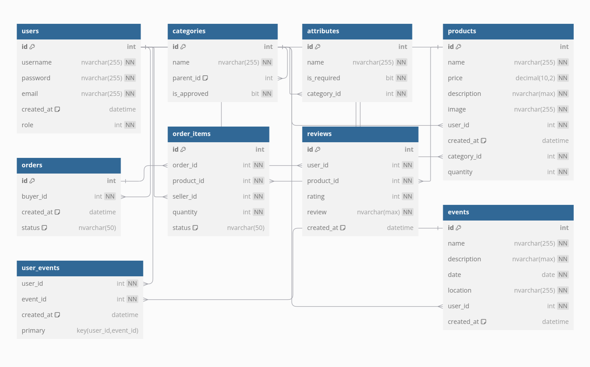

Zelny trh
- Autoři
-
Marek Sucharda
xsucha18@stud.fit.vutbr.cz
- frontend
-
Jakub Pogádl
xpogad00@stud.fit.vutbr.cz
- backend (model, view, controller)
-
Boris Semanco
xseman06@stud.fit.vutbr.cz
- backend (model, view, controller)
- URL aplikace
-
https://vagosturbo.github.io/zelnak-app/
Uživatelé systému pro testování
| Login |
Heslo |
Role |
| admin |
admin |
Administrátor |
| farmer1 |
farmer1 |
Farmár |
| user1 |
user1 |
Zákazník |
| registered |
registered |
Registrovaný uživatel |
Video
Přiložte odkaz na komentované video demostrující použití informačního
systému. Zaměřte se na případy užití definované zadáním (např. registrace
uživatele, správa uživatelů a činnosti jednotlivých rolí). Video nahrajte
například na VUT Google Drive, kde ho bude možné přímo spustit z odkazu.
Implementace
Backend je implementovaný v Node.js a Express.js. Backend komunikuje s databázou Microsoft SQL Server.
Autentifikácia a autorizácia sú implementované pomocou JWT tokenov. Projekt využíva MVC architektúru.
MVC Architektúra
-
Model:
Model predstavuje dátovú vrstvu aplikácie. Rieši komunikáciu s databázou. Pre každú entitu je vytvorený model,
ktorý obsahuje metódy na prístup k databáze. Modely sú zodpovedné za vykonávanie CRUD operácií (Create, Read, Update, Delete).
-
Controller:
Controller predstavuje riadiacu vrstvu aplikácie. Rieši spracovanie požiadaviek od frontendu a volanie metód modelu.
Kontroléry spracovávajú HTTP požiadavky, volajú príslušné metódy modelu a vracajú odpovede klientovi.
-
View:
View, riešený pomocou React.js, predstavuje prezentačnú vrstvu aplikácie. Zobrazuje dáta získané z backendu a umožňuje
používateľom interakciu s aplikáciou. Komponenty Reactu komunikujú s kontrolérmi prostredníctvom HTTP požiadaviek.
Technológie
- Node.js: JavaScript runtime na budovanie serverových aplikácií.
- Express.js: Webový rámec pre Node.js na budovanie RESTful API.
- Microsoft SQL Server: Relačný databázový systém.
- JWT: JSON Web Tokens na bezpečnú autentifikáciu.
- dotenv: Modul na načítanie environmentálnych premenných z .env súboru.
- bcrypt: Knižnica na hashovanie hesiel.
API Endpointy
- User routes (/users)
- GET /: Načítanie všetkých používateľov (len admin).
- GET /:id: Načítanie detailov používateľa podľa ID.
- PUT /:id: Aktualizácia údajov používateľa.
- DELETE /:id: Vymazanie používateľa.
- POST /:userId/events: Pridanie používateľa na udalosť.
- DELETE /:userId/events/:eventId: Odstránenie používateľa z udalosti.
- GET /:userId/registeredevents: Načítanie udalostí, na ktoré je používateľ registrovaný.
- GET /:id/events: Načítanie udalostí vytvorených používateľom.
- GET /:id/products: Načítanie produktov vytvorených používateľom.
- Product routes (/products)
- GET /: Načítanie všetkých produktov.
- GET /:id: Načítanie detailov produktu podľa ID.
- POST /: Vytvorenie nového produktu.
- PUT /:id: Aktualizácia existujúceho produktu.
- DELETE /:id: Vymazanie produktu.
- Order routes (/orders)
- GET /: Načítanie všetkých objednávok (len admin).
- GET /:id: Načítanie detailov objednávky podľa ID.
- POST /: Vytvorenie novej objednávky.
- PUT /:id: Aktualizácia existujúcej objednávky.
- DELETE /:id: Vymazanie objednávky.
- GET /user/:id: Načítanie objednávok podľa ID používateľa.
- POST /:orderId/items: Pridanie položky do objednávky.
- GET /:orderId/items: Načítanie položiek objednávky podľa ID objednávky.
- PUT /items/:id: Aktualizácia položky objednávky.
- DELETE /items/:id: Vymazanie položky objednávky.
- GET /:sellerId/items/: Načítanie položiek objednávky podľa ID predajcu.
- PUT /items/:id/approve: Schválenie položky objednávky.
- Event routes (/events)
- GET /: Načítanie všetkých udalostí.
- GET /:id: Načítanie detailov udalosti podľa ID.
- POST /: Vytvorenie novej udalosti.
- PUT /:id: Aktualizácia existujúcej udalosti.
- DELETE /:id: Vymazanie udalosti.
- Category routes (/categories)
- GET /: Načítanie všetkých kategórií.
- GET /:id: Načítanie detailov kategórie podľa ID.
- POST /: Vytvorenie novej kategórie.
- PUT /:id: Aktualizácia existujúcej kategórie.
- DELETE /:id: Vymazanie kategórie.
- GET /:categoryId/hierarchy: Načítanie hierarchie kategórie.
- PUT /:id/toggle: Schválenie alebo zamietnutie kategórie.
- Attribute routes (/attributes)
- GET /category/:categoryId: Načítanie atribútov podľa ID kategórie.
- POST /: Vytvorenie nového atribútu.
- PUT /:id: Aktualizácia existujúceho atribútu.
- DELETE /:id: Vymazanie atribútu.
- Auth routes (/register, /login)
- POST /register: Registrácia nového používateľa.
- POST /login: Autentifikácia používateľa a vrátenie JWT.
Databáze

Instalace
Stručně popište:
- postup instalace na server,
- softwarové požadavky (verze PHP apod.),
- jak rozbalit, konfigurovat, inicializovat databázi, ...
Známé problémy
Atributy - bolo implementované iba vytváranie, atribútov, ale pri
následnom vytváraní produktov nie sú použité. Je to najmä z dôvodu
nedostatku času.